프로세스 API <1> fork(), wait(), exec(), posix_spawn()
프로세스
process
- 프로세스 상태
- running
- waiting
- stopped
- zombie
- 프로세스의 Identification
- name: 프로세스의 이름
- PID: PID
- PPID: 부모의 PID
- PGID: 프로세스 그룹 ID
- 프로세스는 여러 자식만들 수 있다. 이 자식들을 하나의 그룹으로 관리(Group)
- 즉, PGID는 프로세스가 어느 그룹에 포함되어 있는지에 대한 정보를 알려준다.
- 보통 "PPID == PGID"
- 부모: PID == PGID
- 자식: PPID == PGID
$ ps -efjc | grep forktest
UID PID PPID PGID SID CLS PRI STIME TTY TIME CMD
yundream 12198 8557 12198 8557 TS 24 17:40 pts/0 00:00:00 ./forktest
yundream 12199 12198 12198 8557 TS 21 17:40 pts/0 00:00:00 ./forktest
- 위에서 부모(PID 12198)의 부모는(PID 8557)는 어떤 프로세스일까?
$ ps -efjc | grep 8557
UID PID PPID PGID SID CLS PRI STIME TTY TIME CMD
yundream 8557 8550 8557 8557 TS 24 13:37 pts/0 00:00:00 bash
- bash다!
- PGID가 왜 중요할까?
- 공통의 자원을 공유하는 관계는 서로 중요하다.
- 이 Group 사이에는 signal()을 이용해 소통한다.
- 고아 프로세스?
- 부모가 자식을 낳고, 자식의 자원을 리턴 받기 전에 종료되면, 자식 프로세스는 고아 프로세스가 된다.
- linux에서는 고아가된 프로세스는 init프로세스가 관리해서 버려지지 않도록 설계되어 있다.
#include <unistd.h>
#include <stdlib.h>
#include <string.h>
#include <stdio.h>
int main()
{
int pid;
int i;
i = 1000;
pid = fork();
if (pid == -1)
{
perror("fork error ");
exit(0);
}
// 자식프로세스가 실행시키는 코드
else if (pid == 0)
{
printf("자식 : 내 PID는 %d\n", getpid());
while(1)
{
printf("-->%d\n", i);
i++;
sleep(1);
}
}
// 부모프로세스가 실행시키는 코드
else
{
printf("부모 : 내가 낳은 자식의 PID는 %d\n", pid);
sleep(1);
printf("T.T 나죽네\n");
exit(0);
}
}
- 실행
$ ./forktest
부모 : 내가 낳은 자식의 PID는 8207
자식 : 내 PID는 8207
-->1000
T.T 나죽네
-->1001
mark@mark-desktop$ -->1002
-->1003
.
.
.
- 자식이 자원을 해제하지 못하고 계속 실행
- bash에서 Ctrl + C를 눌러도 자식프로세스는 kill 되지 않는다.
- bash <–> 자식프로세스가 같은 PGID XX!!
전통적인 프로세스 fork(fork-exec)
- 전통적인 fork: 멀티 프로세스
- fork된 자식 프로세스는 부모 프로세스와 독립적으로 작동, 복수 개의 CPU가 설치된 경우 뛰어난 응답성과 성능
- 서로 독립적 및 프로세스 간 통신 비용 단점
- 공통으로 사용하는 파일, I/O는 mmap을 이용하여 비용을 최소화
- fork의 예
vfork
- vfork: fork시, 페이지 테이블을 복제하지 않음
- fork-exec를 좀 더 가볍게 하려고 지원했던 기능
- fork-exec는 exec 가 호출되는 순간 fork로 복제되었던 페이지 테이블은 모두 해제되는 단점
- fork() -> 페이지 테이블 복제
- exec() -> 프로그램 이미지 실행 및 위 페이지 테이블 해제
- 즉, fork_exec는 쓰지도 않는 자원 복제 때문에 오버헤드가 존재했다.
Copy on Write 방식의 fork()
- fork 시, 페이지 테이블 즉시 복사 XX
- 부모와 자식 프로세스의 페이지 테이블이 달라지는 시점에 복제
- 부모나 자식 중에 메모리에 write하는 시점에 복제
- 부모 <-> 자식 공유, 부모만의 메모리, 자식만의 메모리
-
PTE는 커널 메모리 영역에 있음
- 과정
- 부모 자식도 전체 페이지에 write 권한 무효화한다.
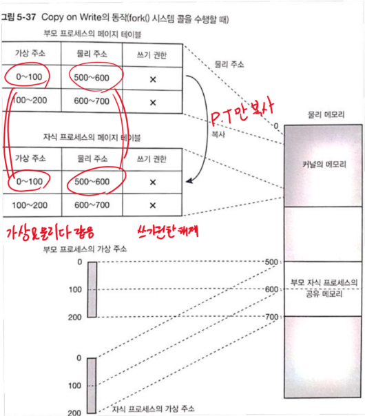 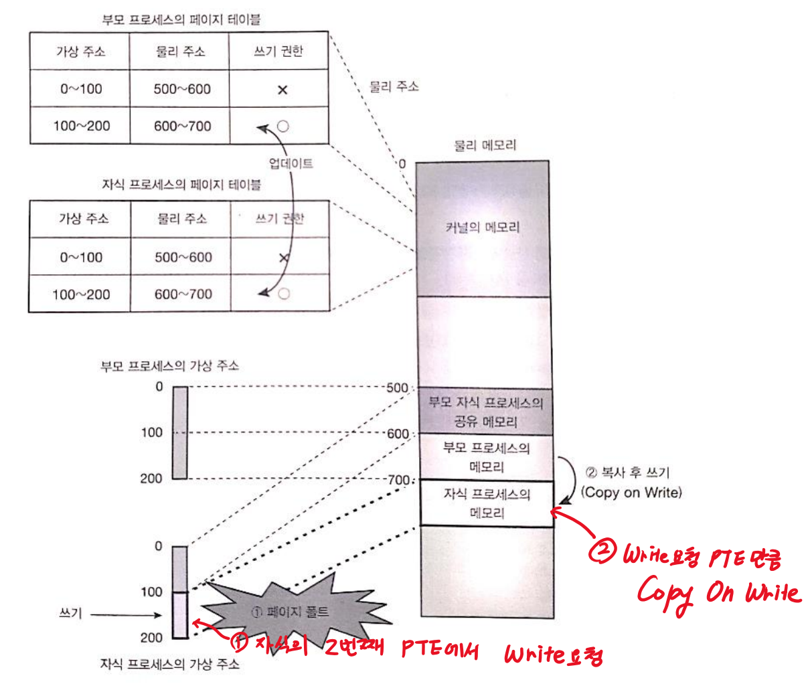
- 부모 혹은 자식이 write 시도 시, 다음과 같이 공유 해제
- CPU에 페이지 폴트 발생
- CPU가 커널 모드로 변경되어 커널의 페이지 폴트 핸들러 동작
- 페이지 폴트 핸들러는 접근한 페이지를 다른 장소에 복사하고, write하려고 한 프로세스에 할당한 후 내용을 다시 작성
- 부모 프로세스, 자식 프로세스 각각 공유가 해제된 페이지에 대응하는 PTE 업데이트
- write한 프로세스 쪽에 엔트리는 새롭게 할당된 물리 페이지를 매핑해 write 허가
- 다른 쪽 프로세스의 엔트리에도 write허가
- 이후 공유가 해제된 페이지에는 각각 자유롭게 R/W 가능
- 하지만, 페이지 테이블을 제외한 모든 정적 자원 그대로 복제되는 오버헤드
- fork 후 즉각 exec를 호출하지 않을 때는 페이지가 복제되는 오버헤드
Copy On Write 실험
- 100MB 메모리를 확보하여 모든 페이지에 접근
- 시스템의 메모리 사용량 확인
- fork() 시스템 콜 호출
- 부모 프로세스와 자식 프로세스가 각각 다음과 같은 동작을 한다.
- 부모 프로세스
- 자식 프로세스의 종료 기다림
- 자식 프로세스
- 시스템 메모리의 사용량과 자기 자신의 가상 메모리 사용량, 물리 메모리의 사용량, Major Fault의 횟수, Minor Fault 횟수 표시
- 위에서 획득한 영역 전부의 페이지에 접근
- 위 결과 횟수 표시
- 부모 프로세스
copy_on_write.c
#include <sys/types.h>
#include <sys/wait.h>
#include <unistd.h>
#include <sys/mman.h>
#include <stdio.h>
#include <stdlib.h>
#include <string.h>
#include <err.h>
#define BUFFER_SIZE (100*1024*1024)
#define PAGE_SIZE 4096
#define COMMAND_SIZE 4096
static char *p;
static char command[COMMAND_SIZE];
static void child_fn(char *p){
printf("*** child ps info before memory access ***:\n");
fflush(stdout);
snprintf(command,COMMAND_SIZE,"ps -o pid,comm,vsz,rss,min_flt,maj_flt | grep %d",getpid());
// shell cmd에 명령을 내리는 문자열
// vsz: 가상 메모리양
// rss: 확보된 물리 메모리양
system(command);
printf("*** free memory info before memory access ***:\n");
fflush(stdout);
system("free");
int i;
for(i=0;i<BUFFER_SIZE;i+=PAGE_SIZE)
p[i]=0;
printf("*** child ps info after memory access ***:\n");
fflush(stdout);
system(command);
printf("*** free memory info after memory access ***:\n");
fflush(stdout);
system("free");
exit(EXIT_SUCCESS);
}
static void parent_fn(void){
wait(NULL);
exit(EXIT_SUCCESS);
}
int main(void){
char* buf;
p=malloc(BUFFER_SIZE);
if(p==NULL)
err(EXIT_FAILURE,"malloc() failed");
int i;
for(i=0;i<BUFFER_SIZE;i+=PAGE_SIZE)
p[i]=0;
printf("*** free memory info before fork ***:\n");
fflush(stdout);
system("free");
pid_t ret;
ret=fork();
if(ret==-1)
err(EXIT_FAILURE,"fork() failed");
if(ret==0)
child_fn(p);
else
parent_fn();
err(EXIT_FAILURE,"shouldn't reach here");
}
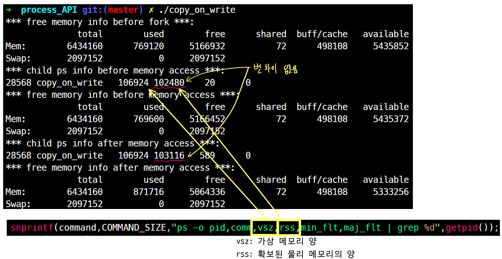
#include <unistd.h>
pid_t fork(void);
- 기능: fork()는 프로세스 자신을 복제해서 새로운 프로세스를 만드는 시스템 콜
- parent process: 원래 존재하는 프로세스
- child process: parent process에서 복제되어 만들어진 프로세스
| return | value |
| 성공 | Parent process get 0 |
| 실패 | Parent process get -1 |
exec():2 프로세스 실행
- exec는
새로운 프로세스 호출덮어씌워짐- exec를호출하면, 그 시점에서 실행 중인 프로그램 소멸 후 새로운 프로그램 로드
- exec로 프로그램 이미지가 대체 되어도 기본적인 PID, PPID, fd등 프로세스의 정보는 유지
#include <unistd.h>
int execl(const char *path, const char *arg, ... /* NULL */);
| parameter | description |
| *path | 실행되는 프로그램의 완전한 경로 |
| *arg | 프로그램이 실행될 때, 넘겨질 아규먼트. 여러 개가 정의 될 수 있다. 더 이상 넘겨질 인자가 없으면 마지막엔 NULL |
- ls -al를 실행하는 간단한 예제
#include <unistd.h>
int main(int argc, char *argv[]){
execl("/bin/ls", "ls", "-al", NULL);
}
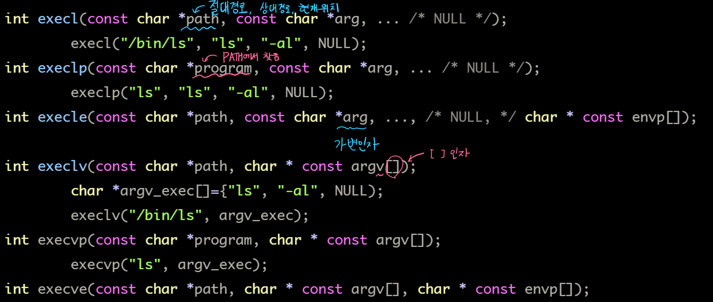
- UNIX: execve()만 시스템 콜, 나머지는 라이브러리 함수
- API 이름 뒷 부분에
l(list)가 붙은 경우는 argument를 가변 인자로 전달, 마지막 NULL - API 이름 뒷 부분에
v(vector)가 붙은 경우는 argument를 문자열 배열로 전달, 마지막 NULL- 1, 2번 째 인자에는 프로그램 이름 중복
execl("/bin/cat", "cat", "hello.c", NULL);
char *argv[3]={ "cat", "hello.c", NULL);
execv("bin/cat", argv);
- API 이름 뒷 부분에
e가 붙은 경우, 환경변수인 envp가 추가된다.
e가 붙지 않은 경우, 현재 프로세스 환경 변수 그대로 사용 - API 이름 뒷 부분에
p가 붙은 경우, $PATH에서 프로그램을 찾는다.
p가 붙지 않은 경우, 프로세스를 절대 경로 또는 상대 경로로 지정해야 한다. -
exec는 성공하면 호출이 돌아오지 않기 때문에 호출이 돌아온 경우는 언제나 실패했음을 의미한다.
실패했을 때는 -1을 반환하고 errno에 에러 번호가 설정한다. - exec는 부모 프로세스의 fd를 복제한다.
- fd에 fcntl 로 FD_CLOEXEC 플래그를 지정하고 fork, 후 exec를 하면 해당 fd는 닫히고 실행된다
- close-on-exec참고
system():3
- system 함수는 셸을 실행시켜서 명령어 실행 기능
fork-exec를 간단하게 구현한 형태- system(“ls -al”)
- system 명령은 부모 프로세스가 잠시 정지된다.
- 자식 프로세스의 정지, 종료 상태를 통보해주는 시그널인 SIGCHLD 도 블록
- 종료 시그널인 SIGINT, SIGQUIT 시그널도 무시
- system함수는 시그널이 블록되어 부모 프로세스가 무한 대기에 빠지는 경우 발생
- fork-exec로 구현하자.
fork():2
#include <sys/types.h>
#include <unistd.h>
pid_t fork(void);
- 기능: fork()는 호출한 프로세스를 복제하여 만들어진 프로세스
- 분기 이후, child와 parent는 별도의 메모리 공간에서 실행한다.
- fork()시, 같은 내용이 두 프로세스에 복제된다
- Memory Write, file mappings(mmap()), unmapping는 서로 영향을 끼치지 않는다.
| return | value |
| 성공 | Parent: child의 real pid Child: 0 |
| 실패 | -1, errno set |
예제 1. 간단한 fork()
#include <unistd.h>
#include <stdlib.h>
#include <string.h>
#include <stdio.h>
int main(){
int pid;
int i;
i=1000;
pid=fork();
if(pid==-1){
perror("fork error\n");
exit(-1);
}
else if(pid==0){
/* child process */
printf("자식의 real pid: %d\n",getpid());
while(1){
printf("-->%d\n",i);
i++;
sleep(1);
}
}
else {
/* parent process */
// 부모는 pid값으로 자식의 real pid값 가진다.
printf("부모, 내 자식의 real pid: %d\n", pid);
while(1){
printf("==>%d\n", i);
i += 4;
sleep(1);
}
}
return 0;
}
$ ps -ef | grep test
UID PID PPID C STIME TTY TIME CMD
yundream 12119 8557 0 17:33 pts/0 00:00:00 ./forktest "parent"
yundream 12120 12119 0 17:33 pts/0 00:00:00 ./forktest "child"
ex)
- 부모의 real PID: 1000 return pid=fork():
1001(자식의 real PID) - 자식의 real PID:
1001(부모+1) return pid=fork(): 0
wait():2
- child process를 기다리는데는 wait()나 waitpid()를 사용한다.
#include <sys/types.h>
#include <sys/wait.h>
pid_t wait(int *status);
pid_t waitpid(pid_t pid, int *status, int options);
wait(&status) == waitpid(-1, &status, 0); // 같은 기능
- wait()는 임의의 child 기다림 + 기다린 프로세스 정보 Get!!
- waitpid()는
pid 명시해 기다림 + 기다린 프로세스 정보 Get!! - wait는 child process가 종료될 때까지 호출한 프로세스는 중지된다.
- state 변화 정보를 얻는다.
- child process 종료, signal에 의한 stop, signal에 의한 resume…
- wait는 child process에 관련된 자원을 release 한다.
Parent의 wait가 동작하지 않으면, child process는 zomebie 프로세스가 된다.- wait()하는 권리는 부모<–>자식 뿐!
- child process가 이미 state가 바뀌었다면, wait는 즉시 리턴된다.
- wait(), waitpid() return
| 상황 | &status에 기록되는 값 | waitpid return 값 |
| child process 정상적 종료 |
WIFEXITED(status) = child process가 exit로 정상적 종료 시, 0이 아닌 값 WEXITSTATUS(status) = 하위 8bit 참조해 child process의 return 값 얻음 |
process ID |
| child process 비정상적종료 |
WIFSIGNAL(status) = 시그널로 종료 시, 0이 아닌 값 WTERMSIG(status) = 시그널로 종료했으면 시그널 번호를 반환! |
process ID |
| waitpid 함수 오류 | ECHILD: 호출 프로세스의 child process 미생성 EINTR: 시스템 콜이 인터럽트 되었음 |
-1 |
- pid_t waitpid(
pid_t pid, int *status, int options);
| waitpid의 pid real pid 아님! |
Description |
| pid < -1 | 프로세스 그룹 ID가 pid의 절댓값과 같은 자식 프로세스를 기다림 |
| -1 | 임의의 자식 프로세스를 기다림 |
| 0 | 호출 프로세스의 프로세스 그룹 PID와 같은 프로세스 그룹 ID를 가진 프로세스 기다림 |
| pid > 0 | 프로세스 ID가 pid인 자식 프로세스 기다림 기다릴 pid 명시 |
| options | Description |
| WCONTINUED | 중단되었다가 재개된 자식 프로세스의 상태 받음 |
| WNOHANG | 기다리는 PID가 종료되지 않아, 즉시 종료 상태를회수 할 수 없는 상황에서 호출한 프로세스는 차단되지 않고 반환 값으로 0을 얻음 |
| WUNTRACED | 중단된 자식 프로세스의 상태를 받음 |
예제 2. fork와 exec를 이용한 새로운 프로세스 생성
#include <stdlib.h>
#include <string.h>
#include <unistd.h>
#include <stdio.h>
#include <sys/wait.h>
#include <sys/types.h>
#define chop(str) str[strlen(str)-1]= 0x0;
int main(int argc, char *argv[]){
char buf[256];
printf("My Shell\n");
int pid;
while(1){
// 사용자 입력을 기다린다.
printf("# ");
chop(buf);
// 입력이 quit라면, 프로그램을 종료한다.
if(strncmp(buf, "quit", 4)==0)
exit(0);
// 입력한 명령이 실행가능한 프로그램이라면,
// fork한 후 execl을 이용해서 실행한다.
if(access(buf, X_OK)==0){
pid=fork();
if(pid<0){
perror("fork error\n");
exit(-1);
} else if(pid==0){
// child process
if(execl(buf, buf, NULL) == -1)
perror("execl in child error\n");
// 제대로 성공 했다면 여기엔 오지 않는다.
exit(-1);
} else if(pid>0){
// parent preocess
int status;
waitpid(pid, &status, WUNTRACED);
}
} else {
// 만약 실행 가능한 프로그램이 아니라면, 에러 메시지 출력
perror("Command Not Found\n\n");
}
}
}
$ myshell
# /usr/bin/w
01:15:32 up 2:58, 4 users, load average: 0.47, 0.50, 0.62
USER TTY FROM LOGIN@ IDLE JCPU PCPU WHAT
yundream :0 - 00:05 ?xdm? 14:20m 0.05s /bin/bash /usr/
yundream pts/1 :0 00:06 9.00s 1.47s 1.24s w3m -F http://w
yundream pts/3 :0 00:54 0.00s 0.22s 0.00s ./myshell
yundream pts/4 :0.0 00:53 22:13m 0.40s 0.27s BitchX irc.nuri
# ll
Command Not Found
# quit
$
simple fork 예제
#include <stdio.h>
#include <stdlib.h>
#include <unistd.h>
#include <sys/wait.h>
#include <errno.h>
#include <err.h>
#include <signal.h>
#define VERSION 1
static void child_fn(void){
printf("Hi,I'm child [PID:%d]\n",getpid()); // getpid()는 진짜 real PID 보여줌
exit(EXIT_SUCCESS);
}
int main(){
int ret=EXIT_FAILURE;
int i=0, ncreated=0;
int nproc=5; // How many child process will you made?
pid_t *pids=(pid_t*)malloc(nproc*sizeof(pid_t));
if(pids==NULL){
warn("malloc(pids) failed");
exit(ret);
}
for(i=0, ncreated=0; i<nproc;i++,ncreated++){
pids[i]=fork(); // fork()하면서 child pid가 pids[i]에 담김
if(pids[i]<0){
goto wait_children;
} else if(pids[i]==0){ // child의 pid_t 값은 0임
// child process
child_fn();
/* shouldn't reach here */
}
}
ret=EXIT_SUCCESS;
// parent
wait_children:
if(ret==EXIT_FAILURE)
for(i=0;i<ncreated;i++)
if(kill(pids[i],SIGINT)<0)
warn("kill(%d) failed\n",pids[i]);
for(i=0;i<ncreated;i++){
/*
* if(wait(NULL)<0)
* warn("wait() failed");
*
*/
int status;
pid_t ChildPid;
#if VERSION == 1
ChildPid=wait(&status);
#elif VERSION == 2
/* 에러 발생시 명시적으로 처리하고 wait */
while(((ChildPid=wait(&status))==-1)&&errno==EINTR); // 인터럽트로 비정상 종료시, 무한 루프로 다시 wait 건다
{
#endif
if(ChildPid<0){
printf("[ERROR] %d\n",errno);
perror("wait func error!");
} else {
if(WIFEXITED(status))
printf("wait: 자식 프로세스 정상 종료 %d\n",WEXITSTATUS(status));
else if(WIFSIGNALED(status))
printf("wait: 자식 프로세스 비정상 종료 %d\n",WTERMSIG(status));
}
#if VERSION == 2
}
#endif
}
free_pids:
printf("Original Process [PID:%d]!\n",getpid());
printf("pids free is done!\n");
free(pids);
exit(ret);
}
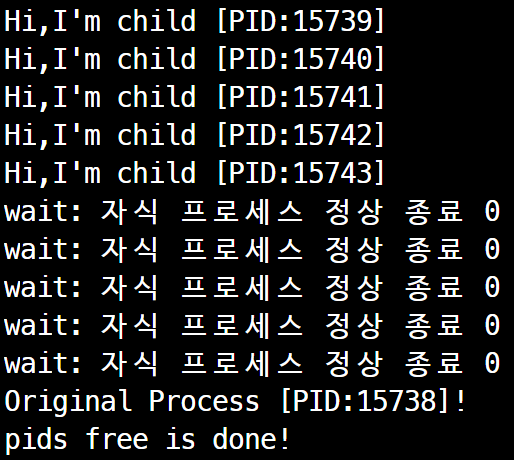
- getpid()으로 real pid 구할 수 있다.
- child의 real pid=parent의 real pid
+1
세 가지를 다 써보는 예제
#include <stdio.h>
#include <stdlib.h>
#include <unistd.h>
#include <sys/types.h>
#include <sys/wait.h>
int main(int argc, char *argv[]){
pid_t pid;
if(argc!=3){
fprintf(stderr, "Usage: %s <command> <arg>\n",argv[0]);
exit(1);
}
pid=fork();
if(pid<0){
/* error occured */
fprintf(stderr, "fork(2) failed\n");
exit(1);
}
if(pid==0){
/* child process */
execl(argv[1], argv[1], argv[2], NULL);
/* Shouldn't reach here */
perror(argv[1]);
exit(99);
}
else {
/* parents process */
int status;
waitpid(pid, &status, 0);
printf("child (PID=%d) finished; ", pid);
if(WIFEXITED(status))
printf("exit, status=%d\n", WEXITSTATUS(status));
else if(WIFSIGNALED(status))
printf("signal, sig=%d\n", WTERMSIG(status));
else
printf("abnormal exit\n");
exit(0);
}
}
$ gcc -g -Wall spawn.c -o spawn
$ ./spawn /bin/echo OK
OK
child (PID=20092) finished; exit,status=0
# 만약 존재하지 않는 프로그램을 실행 한다면?
$ ./spawn /usr/bin/notexist xxx
/usr/bin/notexist: No Such file or directory
child (PID=20339) finished; exit, status=99
- fork()한다.
- child에서 새로운 프로세스 exec
- parent는 wait
- execl로 실행된 프로세스가 exit하며 return 값을 wait에 반환한다.
posix_spawn()
posix_spawn():3
- 확장된 프로세스 실행 방법
- IEEE std. 1003.1d-1999
posix_spawn계열의 새로운 프로세스 실행 방법 제안
- IEEE std. 1003.1d-1999
- posix_spawn에는 부모 프로세스의 자원 중 6가지를 선택적 복제
- 열린 파일
- 프로세스 그룹 ID
- 유저 및 그룹 ID
- 시그널 마스크
- 스케줄링
- 부모 프로세스의 자원 선택적 복제
- fork-exec는 부모 프로세스의 자원을 선택적 복제할 수 없었음
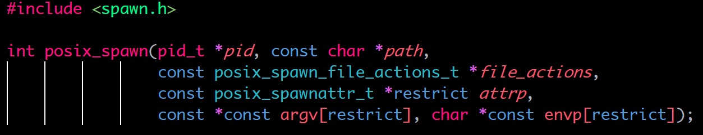
| parameter | description |
| *pid | - |
| *path | 실제로 생성할 자식 프로세스의 실행 파일 경로 절대경로, 상대경로, 현재 실행 위치 tip) path는 경로, file은 PATH에서 찾음 |
| posix_spawn_file_actions_t *file_actions |
posix_spawn이 실행하면서 열거나 닫을 파일의 정보를 담은 구조체 posix_spawn도 부모 프로세스가 열었던 파일은 모두 상속받는다. 추가로 열어야 할 파일이 있거나 기존에 열은 파일을 닫아야 할 필요가 있을 경우에만 사용 |
| posix_spawnattr_t *restrict attrp |
부모 프로세스 자원 선택적 복제 posix_spawnattr_t구조체는 EUID, 프로세스 그룹, 기본 시그널 작동, 시그널 블록 마스크, 스케줄링 파라미터, 스케줄러 설정 NULL: fork-exec와 동일한 작동, 부모 프로세스의 자원을 모두 복제 |
| *restrict argv | argv |
| *restrict envp | envp |
| return | value |
| 성공 | 0 |
| 실패 | 양수, errno set |
- 전통적인 UNIX system call은 int 반환 시, 0이 성공
- 스레드, 비동기처리가 활용되면서 전역 변수인 errno를 사용하는 구조는 문제(pthread는 errno를 스레드 별로 분리하므로 큰 문제x)
- POSIX에서 새로 추가된 system call의 return
- 성공: 0 반환
- 실패: errno가 가지던 EINVAL, EACCESS 같은 매크로 값들이 양수를 반환
posix_spawn_file_actions_t 구조체 조작
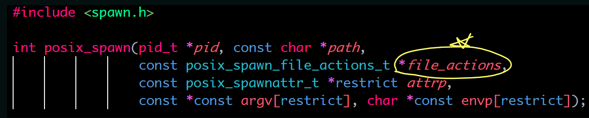
| posix_spawn_file_actions_t *file_actions |
posix_spawn이 실행하면서 열거나 닫을 파일의 정보를 담은 구조체 posix_spawn도 부모 프로세스가 열었던 파일은 모두 상속받는다. 추가로 열어야 할 파일이 있거나 기존에 열은 파일을 닫아야 할 필요가 있을 경우에만 사용 |
int posix_spawn_file_actions_init(posix_spawn_file_actions_t *file_actions);
- file_actions 구조체를 초기화한다.
int posix_spawn_file_actions_destroy(posix_spawn_file_actions_t *file_actions);
- file_actions 구조체 사용한 후 연결된 메모리 해제
int posix_spawn_file_actions_addopen(posix_spawn_file_actions_t *restrict file_actions,
int fildes, const char *restrict path, int oflag, mode_t mode);
- 자식 프로세스가 생성되면서 추가로 오픈할 파일을 지정할 수 있다.
int posix_spawn_file_actions_addclose(posix_spawn_file_actions_t *file_actions, int fildes);
- 오픈했던 fd를 닫는 close-on-exec 기능 설정
int posix_spawn_file_actions_adddup2(posix_spawn_file_actions_t *file_actions, int fildes, int newfildes);
- 자식 프로세스가 생성되면 새 fd를 복제하는 기능, dup2 참고
posix_spawn file_action 예제
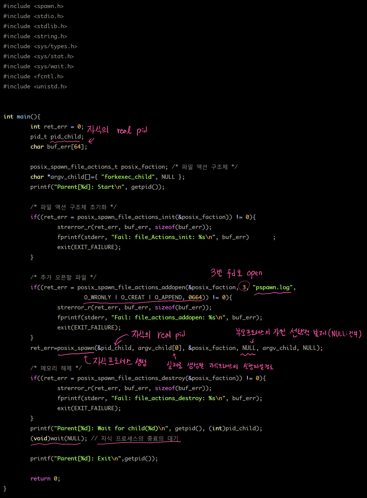
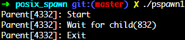
posix_spawnattr_t 구조체 조작
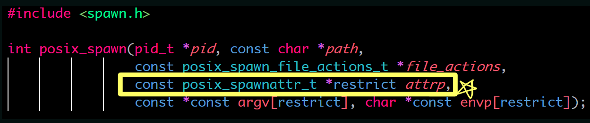
| posix_spawnattr_t *restrict attrp |
부모 프로세스 자원 선택적 복제 posix_spawnattr_t구조체는 EUID, 프로세스 그룹, 기본 시그널 작동, 시그널 블록 마스크, 스케줄링 파라미터, 스케줄러 설정 NULL: fork-exec와 동일한 작동, 부모 프로세스의 자원을 모두 복제 |
int posix_spawnattr_init(posix_spawnattr_t *attr);
- posix_spawnattr_t구조체 초기화
int posix_spawnattr_getflags(const posix_spawnattr_t *restrict attr, short *restrict flags);
int posix_spawnattr_setflags(posix_spawnattr_t *attr, short *flags);
- 설정할 속성을 플래그로 표시
- posix_spawnattr_t구조체는 EUID, 프로세스 그룹, 기본 시그널 작동, 시그널 블록 마스크, 스케줄링 파라미터, 스케줄러 설정
- EUID 설정 제외
- 나머지 기능들은 해당 속성의 on/off를 의미하는 플래그 설정 및 개별적으로 속성을 등록하는 함수 사용
- 기본적으로 자식 프로세스의 EUID는 부모 프로세스의 EUID를 상속 받는다.
- 보안 문제, 권한 등의 이유로 부모 프로세스의 RUID를 상속 받아야 한다면, POSIX_SPAWN_RESETIDS를 셋팅하고 자식 프로세스를 생성
- set-uid 시스템콜 참조
- EUID 설정 제외
표 bitwise-inclusive OR로 결합 가능한 플래그 중에서 POSIX_SPAWN_RESETIDS를 제외한 나머지 5개의 플래그는 설정 후, 상세한 개별 속성을 지정하는 함수를 별도로 사용해야함!!
| flag | 해당 플래그가 설정된 경우에 자식 프로세스의 작동 설명 |
| POSIX_SPAWN_RESETIDS | 자식 프로세스의 EUID(Effective UID)를 부모 프로세스의 RUID(Real UID)로 설정한다. 하지만, 실행될 파일에 SetUID비트가 설정되어 있다면 POSIX_SPAWN_RESETIDS의 플래그는 무시, 해당 파일의 소유권자 UID(Owner UID)로 EUID가 설정된다. |
| POSIX_SPAWN_SETPGROUP | 프로세스 그룹 관련 속성을 활성화한다. 활성화 후 posix_spawnattr_setpgroup으로 속성을 설정한다. |
| POSIX_SPAWN_SETSIGDEF | 기본 시그널 작동 속성을 활성화한다. 활성화 후 posix_spawnattr_setsigdefault로 속성을 설정한다. |
| POSIX_SPAWN_SETSIGMASK | 시그널 블록 마스크 속성을 활성화한다. 활성화 후 posix_spawnattr_setsigmask로 속성을 설정한다. |
| POSIX_SPAWN_SETSCHEDPARAM | 스케줄링 파라미터 속성을 활성화한다. 활성화 후 posix_spawnattr_setschedparam으로 속성을 설정한다. |
| POSIX_SPAWN_SETSCHEDULER | 스케줄러 정책 속성을 활성화한다. 활성화 후 posix_spawnattr_setschedpolicy로 속성을 설정한다. |
posix_spawnattr_t의 프로세스 그룹 속성 조작
int posix_spawnattr_getpgroup(const posix_spawnattr_t *restrict attr, pid_t *restrict pgroup);
int posix_spawnattr_setpgroup(posix_spawnattr_t *attr, pid_t pgroup);
- POSIX_SPAWN_SETPGROUP로 프로세스 그룹 속성 활성화 플래그 set
- posix_spawnattr_setpgroup 함수로 생성될 자식 프로세스의 PGID를 변경할 수 있다. 아래 예제 참고
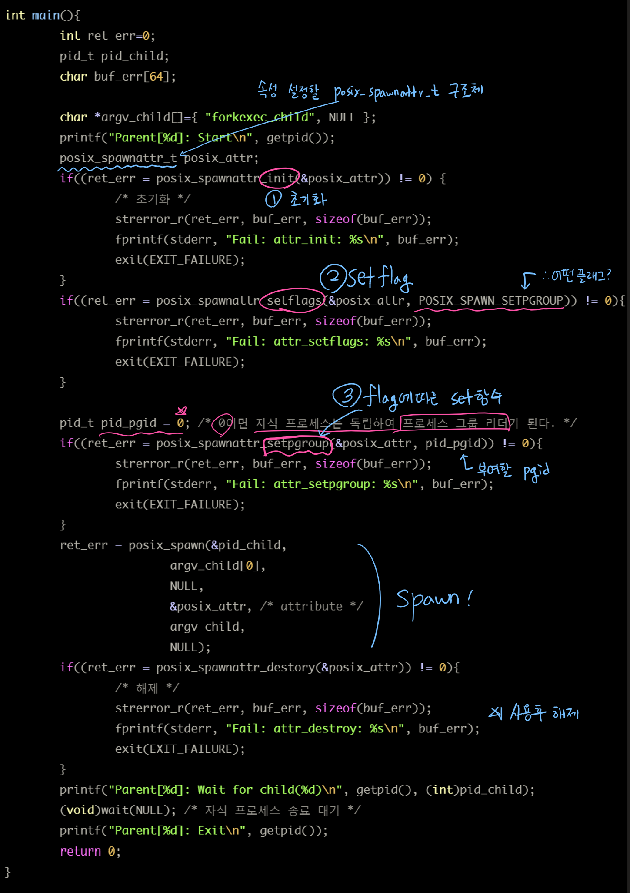
- PGID(프로세스 그룹 ID)가 0이되면 자식 프로세스는 프로세스 그룹 리더됨
- 부모 프로세스로 부터 탈퇴
- 같은 세션 내에서 다른 프로세스 그룹에 편입되려면 해당 PGID를 넣어주면된다.
- 이 기능은 시스템 함수인 setpgid와 동일하므로 프로세스 그룹에 대해 알고 있다면 이해가 쉽다.
posix_spawnattr_t의 시그널 관련 속성 조작
int posix_spawnattr_getsigdefault(const posix_spawnattr_t *restrict attr, sigset_t *restrict sigdefault);
int posix_spawnattr_setsigdefault(posix_spawnattr_t *restrict attr, const sigset_t *restrict sigdefault);
int posix_spawnattr_getsigmask(const posix_spawnattr_t *restrict attr, sigset_t *restrict sigmask);
int posix_spawnattr_setsigmask(posix_spawnattr_t *restrict attr, const sigset_t *restrict sigmask);
- 시그널 관련으로는 2가지 속성 설정이 가능하다.
- 시그널 핸들러 리셋 -> 기본 값으로
posix_spawnattr_setflags에 POSIX_SPAWN_SETSIGDEF 플래그 설정
posix_spanattr_setsigdefault()를 이용해 세부적 시그널 목록 설정 - 시그널 블록 마스크
- 시그널 핸들러 리셋 -> 기본 값으로
중요!
부모 프로세스가 자식 프로세스의 기능을 제어하려면 어떤 방법이 있는지 생각해보자.
- 간단한 제어 명령: 시그널 핸들러를 사용
- 복잡한 제어 명령: IPC
위와 같은 형태의 서버 프로그램에서는 시그널 핸들러가 부모와 자식 프로세스가 각각 다르다.
- 부모 프로세스는 SIGTERM을 무시, 자식 프로세스는 SIGTERM을 받으면 종료한다고 하자.
- 부모 프로세스와 자식 프로세스가 속한 프로세스 그룹에 대해 SIGUSR1 시그널이 전파되면 일부 자식프로세스만 반응하도록 하고 싶다면 어떻게 프로그래밍해야 할까?
기존 fork-exec에서 위의 기능을 그대로 구현
- 매번 자식 프로세스를 fork하기 직전에 부모 프로세스의 시그널 핸들러와 시그널 마스크를 잠시 교체하고 fork 후에 다시 복구
- 이런 방식은 갑작스런 시그널에 대응하기 힘들어서 신뢰성이 높지 못하다.
시그널 핸들러 선택적 설정
- 부모 프로세스 SIGUSR1 SIGUSR2 SIGTERM 핸들러를 무시(lgn)로 동작하도록 설정되어 있다.
- SIGUSR1, SIGUSR2, SIGTERM의 디폴트 동작은 종료(Term)
- posix_spanattr_setsigdefault()를 이용해 SIGTERM을 디폴트로 리셋하고 자식 프로세스 생성
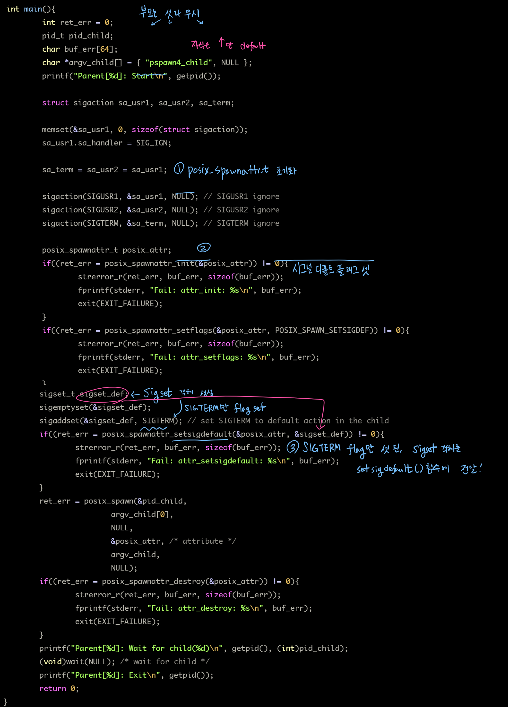
- 시그널 핸들러 테스트용 자식 프로그램
int main(){ printf("Child[%d]: Start\n", getpid()); printf("Child[%d]: raise(SIGUSR1)\n", getpid()); raise(SIGUSR1); printf("Child[%d]: raise(SIGUSR2)\n", getpid()); raise(SIGUSR2); printf("Child[%d]: raise(SIGTERM)\n", getpid()); raise(SIGTERM); printf("Child[%d]: Exit\n", getpid()); return 0; }
시그널 마스크 설정
- 시그널 마스크 설정: 시그널은 프로세스에 전달되지 못하고 막힌다.
- 기본적으로 시그널 마스크는 모두 해제된 상태
- 선택적으로 프로세스 그룹에 시그널을 전파하는 기능 예제
- 부모 프로세스는 그룹X(자식 2개) 그룹Y(자식 2개) 생성
- 그룹 X: SIGUSR2 마스크 됨, SIGTERM 받을 수 있음
- 그룹 Y: SIGUSR1 마스크 됨, SIGTERM 받을 수 있음
부모 프로세스는 프로세스 그룹 내에 SIGUSR1, SIGUSR2, SIGTERM을 순서대로 전파
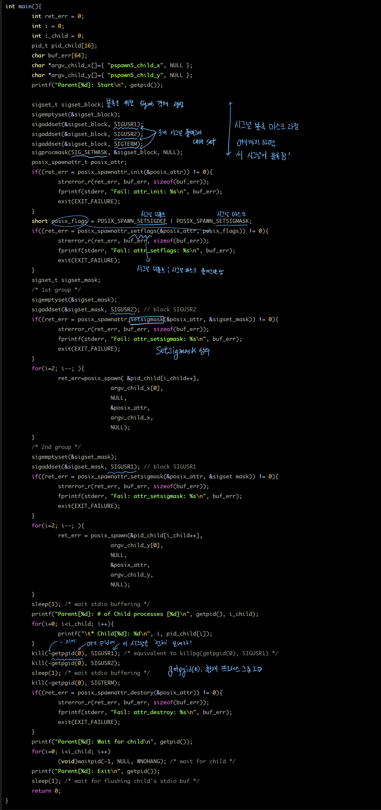
kill(-getpgid(0), SIGUSR1) = killpg(getpgid(0), SIGUSR1)
- getpgid(0): 현재 프로세스의 프로세스 그룹 ID return
- '-': 프로세스 그룹 ID내 프로세스 전체에 시그널 전달하라
자식 프로세스의 코드
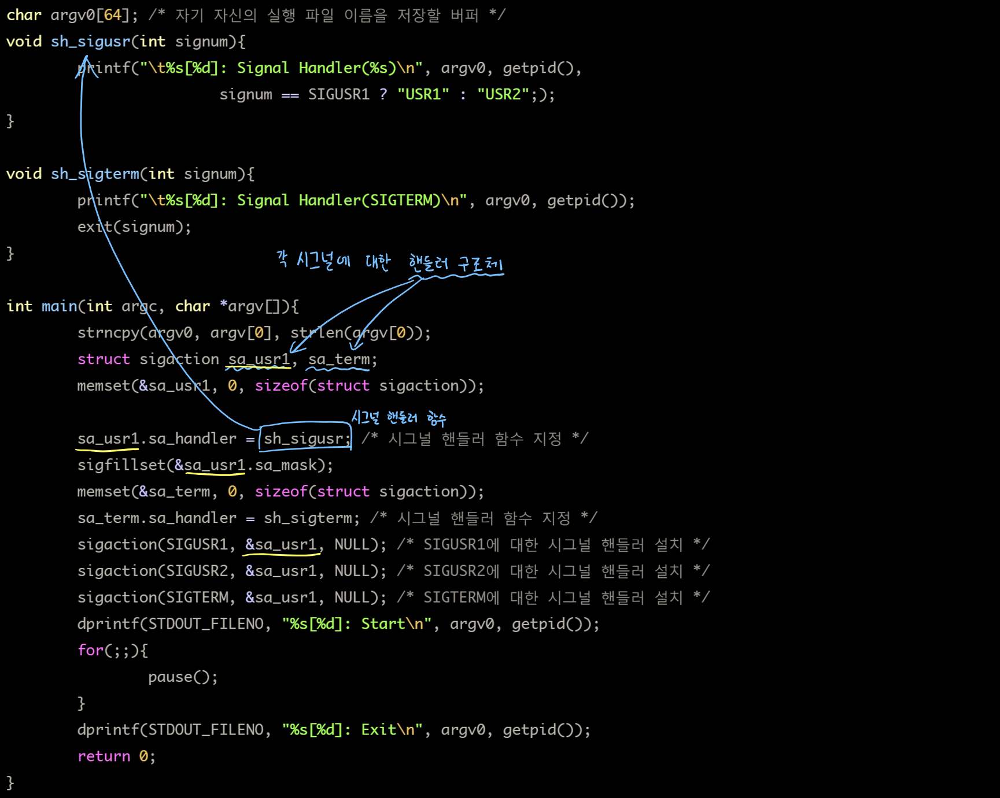
posix_spawnattr_t의 스케줄링 관련 속성 조작
int posix_spawnattr_getschedpolicy(const posix_spawnattr_t *restrict attr, int *restrict schedpolicy);
int posix_spawnattr_setschedpolicy(posix_spawnattr_t *attr, int schedpolicy);
- 자식 프로세스의 스케줄링 정책 설정
- POSIX_SPAWN_SETSCHEDULER 플래그
- posix_spawnattr_setschedpolicy() 함수
int posix_spawnattr_getschedparam(const posix_spawnattr_t *restrict attr, struct sched_param *restrict schedparam);
int posix_spawnattr_setschedparam(posix_spawnattr_t *restrict attr, const struct sched_param *restrict schedparam);
- 스케줄링 파라미터 지정
- POSIX_SPAWN_SETSCHEDPARAM 플래그
- posix_spawnattr_setschedparam() 함수
자세한 인수들은 추후 설명